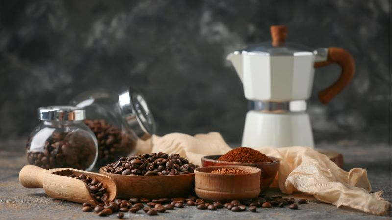

Nutrição e Descanso: Compreendendo o Impacto da Dieta no Sono
Conselho Editorial Portal BioMed
Revisão informativa sobre nutrição clínica e sono
O sono não é um estado passivo; é um processo biológico ativo e altamente sensível a estímulos químicos. O que ingerimos durante o dia, e especialmente nas últimas 6 horas em que estamos acordados, pode alterar drasticamente a arquitetura do sono, eliminando as fases profundas (REM) que são críticas para a regeneração celular e a consolidação da memória.
Análise dos 5 Grandes Estimulantes
1. O Café e o Bloqueio Prolongado
A cafeína tem uma "meia-vida" de aproximadamente 5 a 6 horas. Isto significa que se tomar uma xícara de café às 16h, às 22h ainda terá metade dessa cafeína circulando no seu cérebro. Em pessoas com sensibilidade metabólica, esse tempo pode dobrar.

Impacto: Reduz o sono de ondas lentas, fundamental para a recuperação física.
2. Chocolate Amargo: Saudável mas Inoportuno
Apesar dos seus benefícios antioxidantes, o chocolate escuro é rico em teobromina. Ao contrário da cafeína, a teobromina aumenta o ritmo cardíaco e pode causar pequenas palpitações que impedem o relaxamento necessário para entrar na primeira fase do sono.
3. Alimentos Termogênicos (Especiarias e Pimentas)
O consumo de alimentos picantes (capsaicina) eleva a temperatura central do corpo. A fisiologia do sono requer que a temperatura corporal desça entre 1 e 1,5 graus para facilitar a transição para o descanso profundo.
4. Açúcar e Carboidratos Refinados Noturnos
Um lanche açucarado antes de dormir provoca um pico de insulina que ativa o sistema simpático adrenal. O corpo entra num estado metabólico de "gestão de emergência" que é incompatível com as fases de sono profundo. Além disso, a queda posterior da glicose pode acordar o cérebro a meio da noite.
5. Álcool: O Sabotador do REM
Esta é a armadilha mais perigosa. O álcool é um depressor do sistema nervoso que facilita o início do sono, mas destrói a arquitetura do sono na segunda metade da noite. Ao ser metabolizado, produz acetaldeído, uma substância que fragmenta o sono REM, a fase essencial para a reparação cognitiva e emocional.
Guia de Substituição Inteligente
Para melhorar a qualidade do seu descanso sem sacrificar o sabor, preparamos esta tabela de recomendações baseadas na crononutrição:
| Se tem desejo de... | Evite-o depois das... | Troque-o por... |
|---|---|---|
| Café Expresso | 14:00h | Chá de Camomila ou Valeriana |
| Chocolate de Leite | 18:00h | Iogurte Natural com Nozes |
| Comida Mexicana/Picante | 19:00h | Peixe com vegetais a vapor |
| Bebidas Energéticas | Nunca! (Perto de dormir) | Água com Magnésio |
Conclusão do Especialista
A higiene do sono começa no prato. Identificar estes estimulantes e ajustar os seus horários de consumo é o primeiro passo, e frequentemente o mais eficaz, para eliminar a insônia sem necessidade de medicação. O descanso profundo não é um luxo, é a base da sua saúde cardiovascular e mental.
Este artigo foi útil para você?
Sofrendo com Formigamentos e Queimação nos Pés e Mãos?
A neuropatia periférica pode acabar com o seu sono e qualidade de vida. Nossa equipe clínica publicou um laudo detalhado sobre um novo suplemento natural neurotrópico que está ajudando a restaurar a saúde dos nervos no Brasil.
Ver Análise Completa do Especialista →